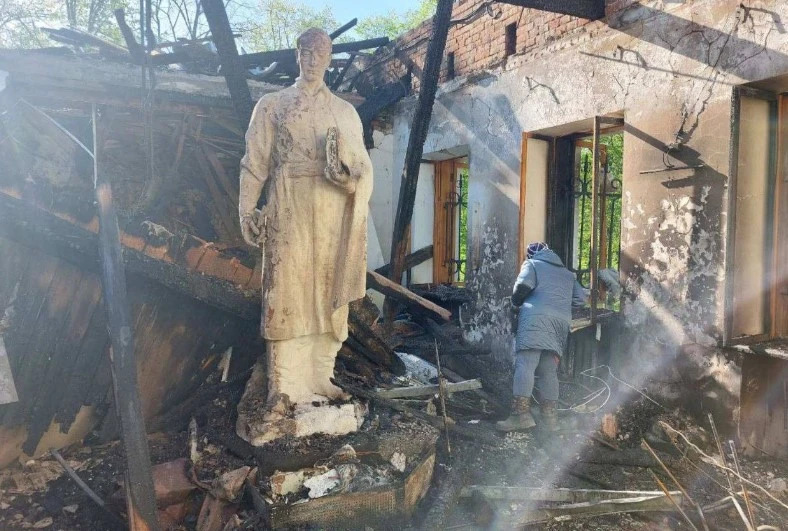
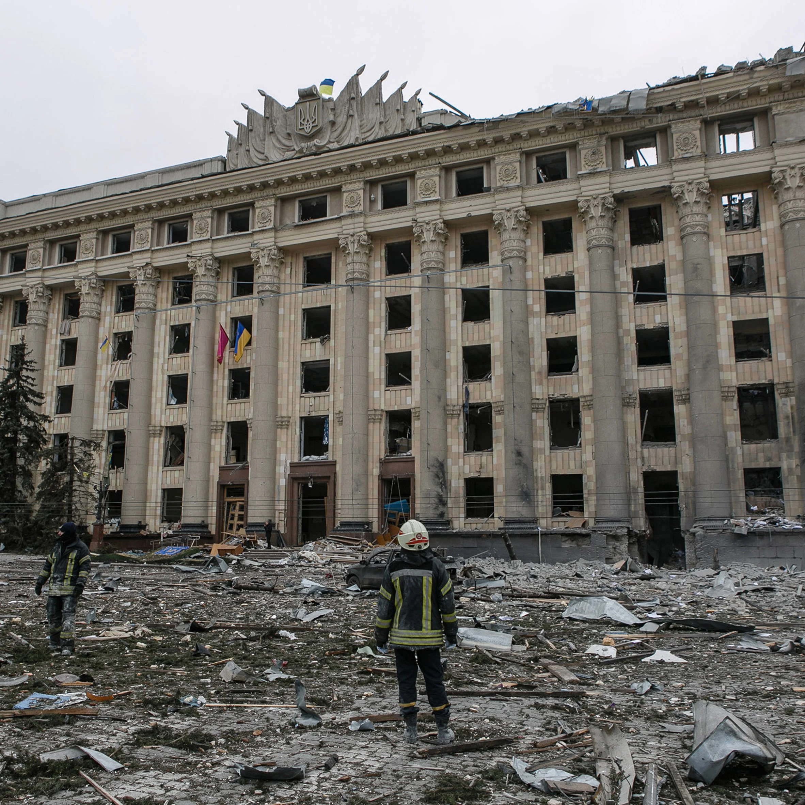

Heritage Watch
Is culture outside of politics?
As of April 10, 2024, Unesco has confirmed that Russian rockets, bombs, and mines have damaged 351 cultural sites in Ukraine since the full-scale invasion began on February 24, 2022. The affected sites include 129 religious structures, 157 historical and artistic buildings, 31 museums, 19 monuments, 14 libraries, and one archive.



